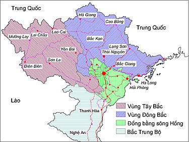
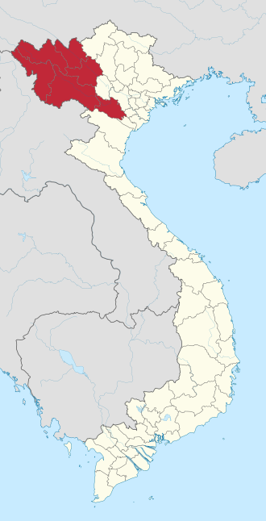
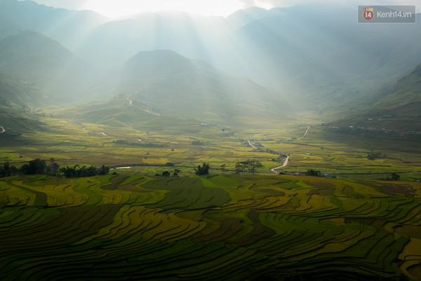

Không gian địa lý của vùng Tây Bắc hiện còn chưa được nhất trí. Một số ý kiến cho rằng đây là vùng phía nam (hữu ngạn) sông Hồng. Một số ý kiến lại cho rằng đây là vùng phía nam của dãy núi Hoàng Liên Sơn. Nhà địa lý học Lê Bá Thảo cho rằng vùng Tây Bắc được giới hạn ở phía đông bởi dãy núi Hoàng Liên Sơn và ở phía tây là dòng sông Mã.
Địa hình Tây Bắc núi cao và chia cắt sâu, có nhiều khối núi và dãy núi cao chạy theo hướng Tây Bắc-Đông Nam. Dãy Hoàng Liên Sơn dài tới 180 km, rộng 30 km, với một số đỉnh núi cao trên từ 2800 đến 3000 m. Dãy núi Sông Mã dài 500 km, có những đỉnh cao trên 1800 m. Giữa hai dãy núi này là vùng đồi núi thấp lưu vực sông Đà (còn gọi là địa máng sông Đà). Ngoài sông Đà là sông lớn, vùng Tây Bắc chỉ có sông nhỏ và suối gồm cả thượng lưu sông Mã. Trong địa máng sông Đà còn có một dãy cao nguyên đá vôi chạy suốt từ Phong Thổ đến Thanh Hóa, và có thể chia nhỏ thành các cao nguyên Tà Phình, Mộc Châu, Nà Sản. Cũng có các lòng chảo như Điện Biên, Nghĩa Lộ, Mường Thanh.
Lịch sử hình thành vùng Tây Bắc bắt đầu từ cách đây 500 triệu năm và đến bây giờ vẫn tiếp tục. Thuở ban đầu, vùng này là biển và chỉ có một số đỉnh ở dãy Hoàng Liên Sơn và dãy Sông Mã là nổi lên trên mặt biển. Biển liên tục rút ra xa rồi lại lấn vào suốt hàng trăm triệu năm. Trong quá trình ấy, đã có những sự sụt lún mạnh, góp phần hình thành các tầng đá phiến và đá vôi. Vào cuối đại Cổ sinh (cách đây chừng 300 triệu năm), dãy Hoàng Liên Sơn và dãy Sông Mã đã được nâng hẳn lên. Địa máng sông Đà lúc đó vẫn chìm dưới biển. Cho đến cách đây 150 triệu năm, chu kỳ tạo núi Indochina làm cho hai bờ địa máng từ từ tiến lại gần nhau, khiến cho trầm tích trong địa máng uốn lên thành những nếp uốn khổng lồ, đồng thời làm cho tầng đá vôi có tuổi cổ hơn lại trồi lên trên tầng đá phiến, tạo thành những cao nguyên đá vôi ngày nay. Trong quá trình tạo núi, còn có sự xâm nhập của macma. Kết quả là, vùng Tây Bắc được nâng lên với một biên độ đến 1000 mét.
Vì là địa máng, vùng vỏ rất động của trái đất, nên Tây Bắc là vùng có nguy cơ động đất cao nhất Việt Nam.
Mục dân số và diện tích ghi theo số liệu của Tổng cục Thống kê Việt Nam trên trang Wikipedia của các tỉnh thành Việt Nam.
| Stt | Tỉnh | Thủ phủ | Thành phố | Thị xã | Huyện | Diện tích (km²) | Dân số (người) | Mật độ (km²) | Biển số xe | Mã vùng ĐT |
|---|---|---|---|---|---|---|---|---|---|---|
| 1 | Hòa Bình | Hòa Bình | 01 | 09 | 4.591 | 868.623 | 189 | 28 | 218 | |
| 2 | Sơn La | Sơn La | 1 | 11 | 14.123,5 | 1.286.068 | 91 | 26 | 212 | |
| 3 | Điện Biên | Điện Biên Phủ | 1 | 1 | 8 | 9.541 | 623.295 | 65 | 27 | 215 |
| 4 | Lai Châu | Lai Châu | 1 | 7 | 9.068,8 | 480.588 | 53 | 25 | 213 | |
| 5 | Lào Cai | Lào Cai | 1 | 1 | 7 | 6.364 | 756.083 | 119 | 24 | 214 |
| 6 | Yên Bái | Yên Bái | 1 | 1 | 7 | 6.887,7 | 838.181 | 122 | 21 | 216 |
Một số phần của Phú Thọ và 2 tỉnh Lào Cai, Yên Bái nằm ở hữu ngạn sông Hồng, do dòng sông chảy qua giữa địa phận các tỉnh này, song phạm vi hành chính của vùng Tây Bắc không bao gồm Phú Thọ, đôi khi 2 tỉnh Lào Cai, Yên Bái cũng được xếp vào Đông Bắc Bộ. Tuy nhiên, hiện nay trụ sở của Ban chỉ đạo Tây Bắc nằm ở thành phố Yên Bái, tỉnh lỵ của tỉnh Yên Bái.
Về cơ bản, vùng Tây Bắc là không gian văn hóa của dân tộc Thái, nổi tiếng với điệu múa xòe tiêu biểu là điệu múa xòe hoa rất nổi tiếng được nhiều người biết đến. Mường là dân tộc có dân số lớn nhất vùng. Ngoài ra, còn khoảng 20 dân tộc khác như H'Mông, Dao, Tày, Kinh, Nùng,... Ai đã từng qua Tây Bắc không thể quên được hình ảnh những cô gái Thái với những bộ váy áo thật rực rỡ đặc trưng cho Tây Bắc. tây bắc là vùng có sự phân bố dân cư theo độ cao rất rõ rệt: vùng rẻo cao(đỉnh núi) là nơi cư trú của các dân tộc thuộc nhóm ngôn ngữ Mông - Dao, Tạng Miến,với phương thức lao động sản xuất chủ yếu là phát nương làm rẫy, phụ thuộc rất nhiều vào thiên nhiên; vùng rẻo giữa(sườn núi) là nơi cư trú của các dân tộc thuộc nhóm ngôn ngữ Môn - Khmer, phương thức lao động sản xuất chính là trồng lúa cạn, chăn nuôi gia súc và một số nghề thủ công; còn ở vùng thung lũng, chân núi là nơi sinh sống của các dân tộc thuộc nhóm ngôn ngữ Việt - Mường, Thái - Kadai,điều kiện tự nhiên thuận lợi hơn để phát triển nông nghiệp và các ngành nghề khác. sự khác biệt về điều kiện sinh sống và phương thức lao động sản xuất cũng gây ra sự khác biệt văn hóa rất lớn! mặc dù văn hóa chủ thể và đặc trưng là văn hóa dân tộc Mường.
Dãy núi Hoàng Liên Sơn nhìn từ Sa Pa
Ruộng bậc thang Mù Cang Chải ở xã Cao Phạ bên đèo Khau Phạ
Hưng Hóa với vị trí các địa danh châu huyện thuộc các phủ Quy Hóa, An Tây, Điện Biên, Gia Hưng của xứ Hưng Hóa tiếp giáp Trung Quốc, và Lào gồm (Văn Bàn, Thủy Vĩ, Chiêu Tấn, Quảng Lăng, Hợp Phì, Tuy Phụ, Hoàng Nham, Lễ Tuyền, Tung Lăng, Khiêm, Lai, Luân, Thuận, Tuần Giáo, Ninh Biên, Quỳnh Nhai, Sơn La, Mai Sơn, Yên, Phù Hoa, Mộc, Đà Bắc, Mã Nam, Mai, Thanh Xuyên, Yên Lập, Văn Chấn và Trấn Yên).
Năm 1014, tướng nước Đại Lý là Đoàn Kính Chí đem quân vào chiếm đóng châu Vị Long và châu Đô Kim (nay
thuộc Tuyên Quang), vua Lý Thái Tổ sai con là Dực Thánh Vương đi đánh dẹp, quân Đại Lý đại bại, nhân cơ
hội đó nhà Lý sáp nhập luôn khu vực ngày nay là Hà Giang vào Đại Cồ Việt.
Năm 1159, nhân khi nước Đại Lý suy yếu, vua Lý Anh Tông và Tô Hiến Thành đã tiến hành thu phục vùng đất
của các tù trưởng dân tộc thiểu số người Thái (châu Văn Bàn, châu Thủy Vĩ) ở bắc Yên Bái, nam Lào Cai
vào lãnh thổ Đại Việt.
Năm 1294, thượng hoàng Trần Nhân Tông, cùng Phạm Ngũ Lão, đi đánh bại Ai Lao thu nạp đất đai. Năm 1297,
Trần Anh Tông sai Trần Nhật Duật đánh A Lộc (Ai Lao), Trần Quốc Tảng đánh Sầm Tử, Phạm Ngũ Lão đánh tan
Ai Lao thu lại đất cũ ở sông Chàng Long. Năm 1301, Phạm Ngũ Lão đánh Ai Lao ở Mường Mai (Châu Mai, nay
là đất Mai Châu)[6]. Các vùng đất thu nạp được thời kỳ này nhà Trần đặt làm huyện Mông đạo Đà Giang, đến
đời thuộc Minh là đất hai huyện Mông và Tư Mang, sang thời nhà Lê sơ là toàn bộ châu Mộc (Mộc Châu (nay
là Mộc Châu, Vân Hồ), Đà Bắc, Mã Nam (nay là huyện Sop Bao Lào)), và châu Mai phủ Gia Hưng.
Năm 1329, thượng hoàng Trần Minh Tông đi đánh mán Ngưu Hống, thổ tù Mường Mỗi, tại Mang Việt đạo Đà
Giang[7] thu nạp đất châu Yên (Mang Việt)[8], Phù Hoa, Mường Mỗi (châu Thuận) là các vùng đất nay là các
huyện Yên Châu, Phù Yên, Thuận Châu, Tuần Giáo, Sơn La, Mai Sơn tỉnh Sơn La.
Theo Minh sử, năm 1405, Đèo Cát Hãn dâng sớ lên triều đình nhà Minh tố cáo nhà Hồ đánh chiếm 7 trại Mãnh
Man thuộc châu Ninh Viễn dưới quyền Đèo Cát Hãn, vốn thuộc phủ Lâm An của tỉnh Vân Nam, giết con rể của
ông, bắt con gái của ông để khống chế.[9] Trong các nguyên do mà nhà Minh viện ra khi sang đánh nhà Hồ
có lý do này. Nhà Hồ lúc đó yếu thế phải trả lại Đèo Cát Hãn các trại này. Châu Ninh Viễn đến thời Lê sơ
gọi là Mường Lễ.
Đến năm 1431, Lê Lợi thu phụ Đèo Cát Hãn, có thêm châu Phục Lễ (Mường Lễ), vùng thượng lưu sông Đà do
Đèo Cát Hãn cai quản, từng là châu Ninh Viễn của Vân Nam, nhập về. Mường Lễ sau đổi Thành Phục Lễ phủ An
Tây gồmː đất Mường Lễ (châu Lai), Tuy Phụ (Mường Tè), Hoàng Nham (Mường Toong, Mường Nhé), Chiêu Tấn
(Phong Thổ), Lễ Tuyền (Mường Boum), Hợp Phì (Xiềng My, nay là Giả Mễ huyện Kim Bình, Vân Nam), Khiêm
Châu (Mường Tinh), Quảng Lăng (Mường La, nay là Mường Lạp huyện Kim Bình, Vân Nam), Tung Lăng (Phù
Phang), Luân Châu (Mường Báng), Quỳnh Nhai (Mường Chăn).
Năm 1467 Lê Thánh Tông thu nạp vùng sách Câu Lộng (Mã Giang) từ Ai Lao (nay là khoảng huyện Sông Mã tỉnh
Sơn La).
Năm 1478, vua Lê Thánh Tông, sau khi thu phục tiểu vương quốc Bồn Man đã sáp nhập vùng phía tây Sơn La
(thượng lưu sông Mã, nay là khoảng các huyện Sốp Cộp, Sông Mã tỉnh Sơn La), các huyện phía tây Thanh
Hóa, Nghệ An và tỉnh Hủa Phăn của Lào ngày nay vào đất Đại Việt. Đến thời Lê Thánh Tông, cơ bản vùng Tây
Bắc Việt Nam đã hình thành và thuộc vào lãnh thổ Đại Việt. Và từ đây cho đến cuối thế kỷ 19, toàn bộ
vùng Tây Bắc Việt Nam đều tương đương với cương vực của một địa danh duy nhất mang tên Hưng Hóa, ban đầu
là thừa tuyên Hưng Hóa, rồi đến xứ Hưng Hóa, sau đó là trấn Hưng Hóa và cuối cùng là tỉnh Hưng Hóa.
Đến cuối triều Lê trung hưng, trong những năm 1684-1777, khoảng 7 châu của trấn Hưng Hóa Đại Việt, giáp
giới với tỉnh Vân Nam đã bị mất về lãnh thổ Trung Quốc, gồm: Mường La-Quảng Lăng, Mường Tè-Tuy Phụ,
Mường Tong-Hoàng Nham, Phong Thổ-Chiêu Tấn, Mường Boum hoặc M.Léo-Lễ Tuyền, Tché My (Xiềng My)-Hợp Phì,
Khiêm Châu - Mường Tinh (M.Tía), Tung Lăng - Phù Phang (Pou Fang gần Mường Nhé (M.Nhié)) hoặc Quảng Lăng
(Ta Leng Po).
Năm 1768-1769, quân nhà Lê-Trịnh, tiến đánh Hoàng Công Chất cát cứ Mường Thanh của Lào Lung, thu nạp đất
này lập ra châu Ninh Biên (Điện Biên Phủ) thuộc trấn Hưng Hóa[10].
Cũng cuối nhà Lê trung hưng, triều Lê Hiển Tông niên hiệu Cảnh Hưng 36 (1776), châu Mộc chia tách thành
3 châu làː châu Đà Bắc, châu Mộc (nay là huyện Mộc Châu và Vân Hồ), châu Mã Nam. Sau đó khoảng những năm
1780 đến đầu thời nhà Tây Sơn, Thổ tù các châu này vốn là anh em họ Xa, bất hòa. Thổ tù châu Mã Nam về
theo châu Xiềng Khô của Vương quốc Luang Phrabang (Lào Lung)[11]. Từ đó vùng lãnh thổ của trấn Hưng Hóa
Đại Việt nằm bên bờ nam sông Mã là châu Mã Nam (nay là khoảng huyện Sop Bao) tiếp giáp phía nam tỉnh Sơn
La ngày nay trở thành lãnh thổ Lào, mà không còn thuộc Tây bắc Việt Nam nữa.
Sang thời nhà Nguyễn vùng Tây Bắc Việt Nam là vùng lãnh thổ thuộc trấn Hưng Hóa (1802-1831) sau là tỉnh
Hưng Hóa (1831-1884). Tuy nhiên, thời này vùng Tây Bắc Việt Nam không bao gồm các vùng lãnh thổ Hưng Hóa
mất sang nhà Thanh Trung Quốc (7 châuː Tung Lăng, Quảng Lăng, Tuy Phụ, Hoàng Nham, Lễ Tuyền, Hợp Phì,
Khiêm) và châu Mã Nam mất về Lào).
Tháng Tư năm 1884 quân Pháp dưới sự chỉ huy của Thiếu tướng Brière de l'Isle mở cuộc hành chinh đánh lấy
thành Hưng Hóa. Quân nhà Nguyễn cùng quân Cờ Đen thấy không giữ được nên nổi lửa đốt thành rồi bỏ ngỏ
đồn lũy, rút lên mạn ngược (khu vực sau là các tỉnh Lai Châu, Lào Cai, Yên Bái). Chiếm được Hưng Hóa,
người Pháp cho phân định lại địa giới, cắt thêm những tỉnh mới cùng tiểu quân khu để dễ dàng cai trị:
tháng 5 năm 1886 thành lập tỉnh Chợ Bờ (tức tỉnh Mường, sau đổi thành tỉnh Hòa Bình); ngày 7 tháng 1,
1899 thành lập đạo quân binh IV bao gồm Tiểu quân khu Yên Bái và Tiểu quân khu Lào Cai, Tiểu quân khu
Vạn Bú... Lào Cai là đạo lỵ (về sau đổi thành các tỉnh dân sự như: tỉnh Yên Bái (1895), tỉnh Vạn Bú
(1895, sau đổi thành tỉnh Sơn La), tỉnh Lào Cai (tháng 7 năm 1907) và tỉnh Lai Châu (tháng 6 năm
1909)...
Sau khi cắt đi 16 châu, 4 phủ và hai huyện Trấn Yên, Văn Chấn để thành lập đạo quan binh IV với các tiểu
quân khu, khu quân sự... Tỉnh Hưng Hoá chỉ còn lại huyện Tam Nông và huỵện Thanh Thủy. Toàn quyền Đông
Dương đã điều chỉnh một số huyện của tỉnh Sơn Tây sang, cộng với 2 huyện còn lại để thành lập tỉnh Hưng
Hoá mới.
Năm 1887, Pháp ký kết với nhà Thanh công ước Pháp-Thanh hoạch định biên giới, quy định cắt toàn bộ khu
vực lãnh thổ châu Chiêu Tấn phủ An Tây tỉnh Hưng Hóa nhà Nguyễn (tức là khu vực các huyện Sìn Hồ, Phong
Thổ, Tam Đường, Nậm Nhùn tỉnh Lai Châu, huyện Bát Xát tỉnh Lào Cai) về cho nhà Thanh[12]. Khu vực này
cùng với khu vực 6 châu phủ An Tây Đại Việt đã mất vào thời nhà Lê là Mường Tè (Tuy Phụ), Mường Nhé
(Hoàng Nham), Mường Chà (Khiêm Châu), Hợp Phì, Lễ Tuyền, Tung Lăng, Mường La (Quảng Lăng) vốn là đất thế
tập tự trị của dòng họ Đèo người Thái trắng. Châu Chiêu Tấn, đương thời do Đèo Văn Trị cần vương kháng
Pháp cai quản, bị Pháp chuyển cho nhà Thanh.
Ngày 8 tháng 9 năm 1891, ba huyện Sơn Vi, Thanh Ba, Phù Ninh thuộc phủ Lâm Thao, tỉnh Sơn Tây nhập vào
tỉnh Hưng Hoá.
Ngày 9 tháng 12 năm 1892 huyện Cẩm Khê thuộc phủ Lâm Thao, tỉnh Sơn Tây nằm trong địa bàn tiểu quân khu
Yên Bái nhập về tỉnh Hưng Hoá.
Ngày 5 tháng 6 năm 1893, huyện Hạ Hòa thuộc phủ Lâm Thao, tỉnh Sơn Tây nằm trong địa bàn tiểu quân khu
Yên Bái được nhập vào tỉnh Hưng Hoá.
Năm 1895, cùng với sự đầu hàng của Đèo Văn Trị và sự suy yếu của nhà Thanh, Pháp đã ký kết với nhà Thanh
công ước hoạch định biên giới sửa đổi, quy định lấy lại phần đất tỉnh Hưng Hóa cũ đã mất cho nhà Thanh
trong công ước năm 1887, và lấy thêm các phần đất nay là các huyện Mường Tè tỉnh Lai Châu, Mường Nhé,
Mường Chà tỉnh Điện Biên về cho xứ Bắc Kỳ thuộc Pháp. Phần đất các huyện Mường Tè, Mường Nhé, Mường Chà
này là một phần (3/6 châu) của 6 châu (Tuy Phụ, Hoàng Nham, Khiêm Châu, Tung Lăng, Lê Tuyền, Hợp Phì) đã
mất cho nhà Thanh Trung Quốc từ thời nhà Lê trung hưng, đến suốt thời nhà Tây Sơn và nhà Nguyễn độc lập
chưa lấy lại được. Các phần đất này sau nhập vào tỉnh Lai Châu thời Pháp thuộc. Tuy nhiên, đổi lại Pháp
cắt cho Trung Quốc phần còn lại sau công ước 1887 của vùng đất Tụ Long Hà Giang, nơi có nhiều mỏ khoáng
sản quý.
Ngày 17 tháng 7 năm 1895, hai châu Thanh Sơn và Yên Lập thuộc khu quân sự Đồn Vàng chuyển về tỉnh Hưng
Hoá.
Ngày 24 tháng 8 năm 1895 hai huyện Hùng Quan và Ngọc Quan của phủ Đoan Hùng thuộc tiểu quân khu Tuyên
Quang; đạo quan binh 3 Yên Bái nhập vào tỉnh Hưng Hoá.
Như vậy tỉnh Hưng Hóa mới gồm 2 phủ 10 huyện và 2 châu. Trong đó 2 huyện Tam Nông, Thanh Thủy và 2 châu
Thanh Sơn, Yên Lập vốn là đất cũ của tỉnh Hưng Hoá; phủ Đoan Hùng với 2 huyện Hùng Quan và Ngọc Quan,
phủ Lâm Thao và 6 huyện: Sơn Vi, Thanh Ba, Phù Ninh, Cẩm Khê, Hạ Hòa, Hạc Trì là những phủ, huyện mới từ
tỉnh Sơn Tây chuyển sang. Tỉnh lỵ tỉnh Hưng Hoá đặt tại thị xã Hưng Hóa (thành lập ngày 1 tháng 5 năm
1895, vốn là thành Hưng Hóa), đóng tại xã Trúc Khê, huyện Tam Nông (nay là thị trấn Hưng Hóa, huyện Tam
Nông, tỉnh Phú Thọ).
Ngày 5 tháng 5 năm 1903 tỉnh Hưng Hóa mới (phần còn lại) được đổi tên thành tỉnh Phú Thọ.
Tại vùng Tây Bắc thời Pháp thuộc đã lập ra xứ Thái tự trị. Năm 1955, Khu tự trị Thái-Mèo được thành lập,
gồm 3 tỉnh Lai Châu, Sơn La và Nghĩa Lộ, và đến năm 1962 gọi là Khu tự trị Tây Bắc. Khu tự trị này giải
thể năm 1975.
Phân chia tỉnh Hưng Hóa và biên giới Bắc Kỳ-Trung Quốc (tỉnh Hưng Hóa cũ với tỉnh Vân Nam) trong bản đồ Bắc Kỳ năm 1890
Vùng Tây Bắc có vị trí chiến lược trong an ninh-quốc phòng. Hiện nay, vùng Tây Bắc do Quân khu 2, Quân khu 3
bảo vệ.
Trong thời kỳ kháng chiến chống Pháp, nơi đây đã diễn ra nhiều trận đánh và chiến dịch quân sự ác liệt mà
đỉnh cao là chiến dịch Điện Biên Phủ. Ngoài ra còn có trận Nà Sản cũng trong thời kì Chiến tranh Đông Dương